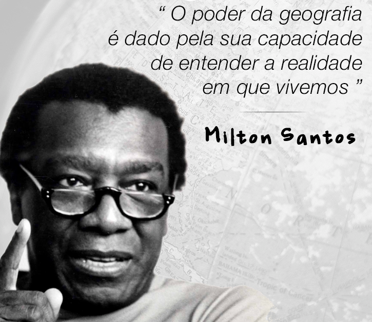

Blog sobre geografia, tecnologia e análise de dados.
Acredito na potência de unir geografia e tecnologia como ferramentas fundamentais para compreender o futuro, assim como são essenciais para revelar o presente.
